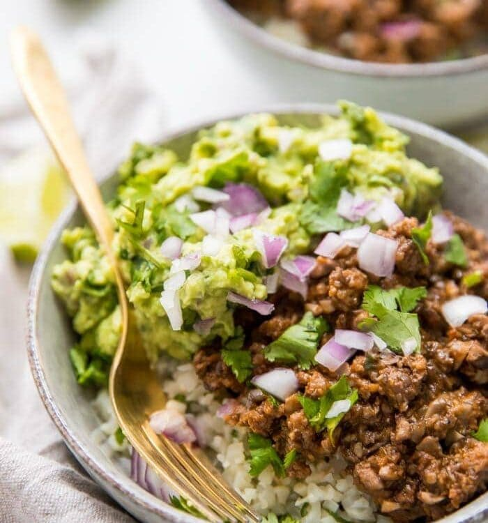

Ground Beef Lunch

Description
Got beef? This recipe is something I eat this nearly five times a week and never tire
of it. It features clean ingredients, but sacrifices no taste. It can also easily be portioned down depending
on your caloric and macronutrient needs.
Ingredients
- 2 Grass fed beef patties
- 1 cup rice
- 2 handfuls organic spinach
- 1/2 avocado
- Olive oil
- Seasoning for beef (I use special s**t)
- Optional: Frank's hot sauce
Steps
- Rinse rice and start cooking in rice cooker
- Grease pan with olive oil
- Place beef patties in pan
- Season top side of patties
- After a few minutes, flip patties and season other side
- After patties are flipped, cover both patties with spinach
- When patties are finished, cut into small bites and lay over the rice
- Slice up avocado and place on top of beef, rice and spinach
- Optional: Drizzle Frank's hot sauce over the top of everything
- Enjoy!